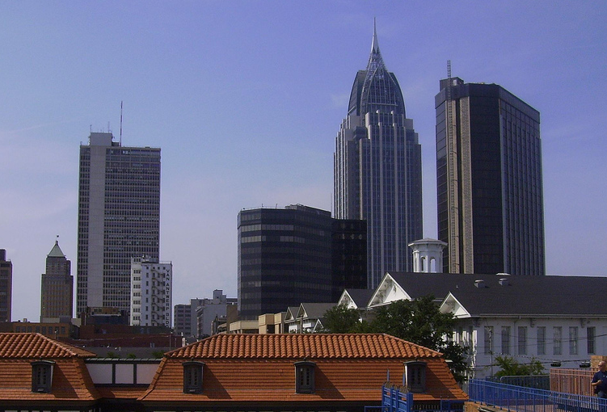

Situated on the Gulf Coast, Mobile, Alabama, is a pivotal economic and cultural hub. As the birthplace of Mardi Gras in the United States, Mobile hosts fantastic parties annually, attracting both locals and visitors. The city's strategic port, diverse economy, and cultural attractions, such as the USS Alabama Battleship Memorial Park, contribute to its status as a dynamic and influential community along the Gulf of Mexico.
